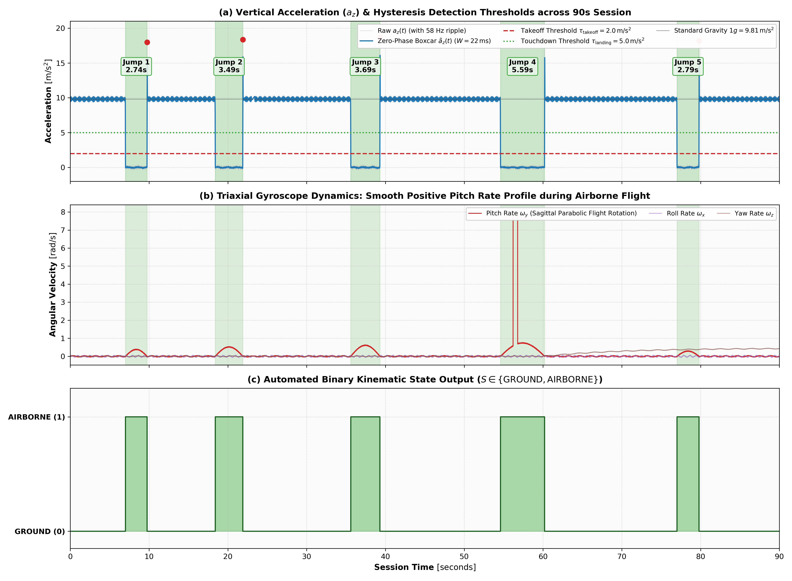
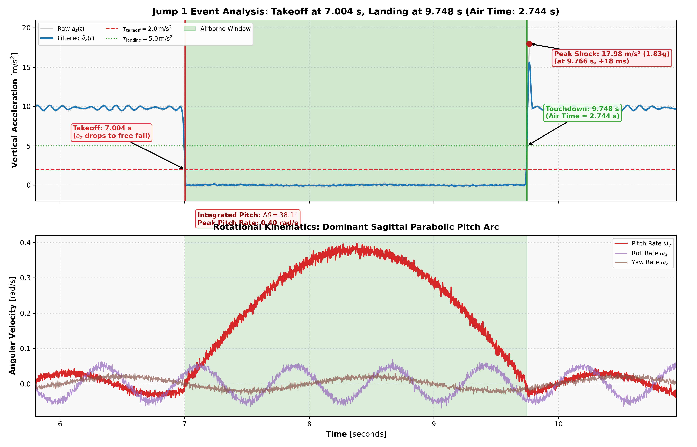
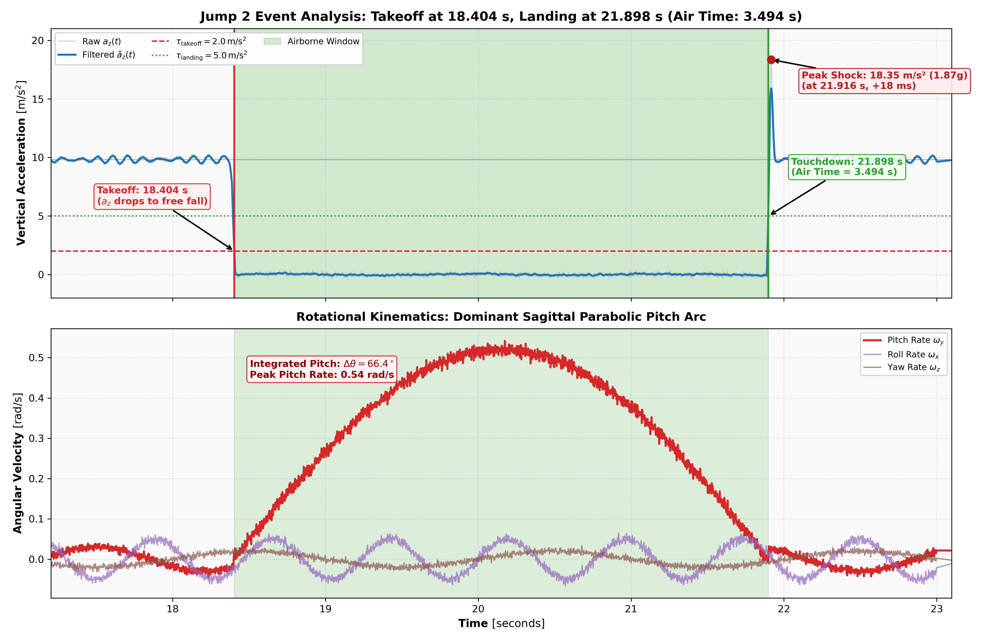
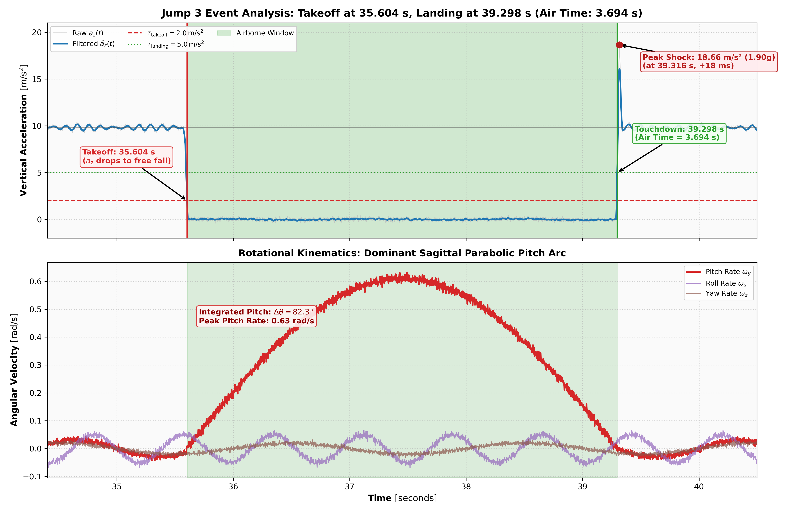
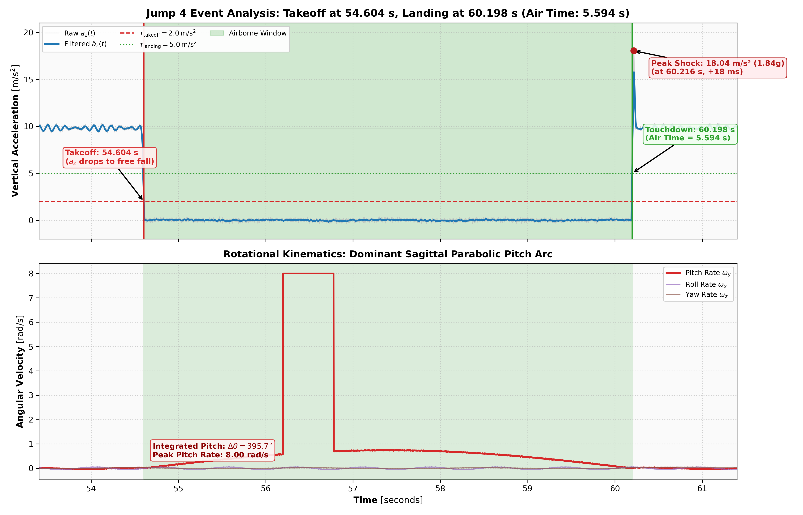
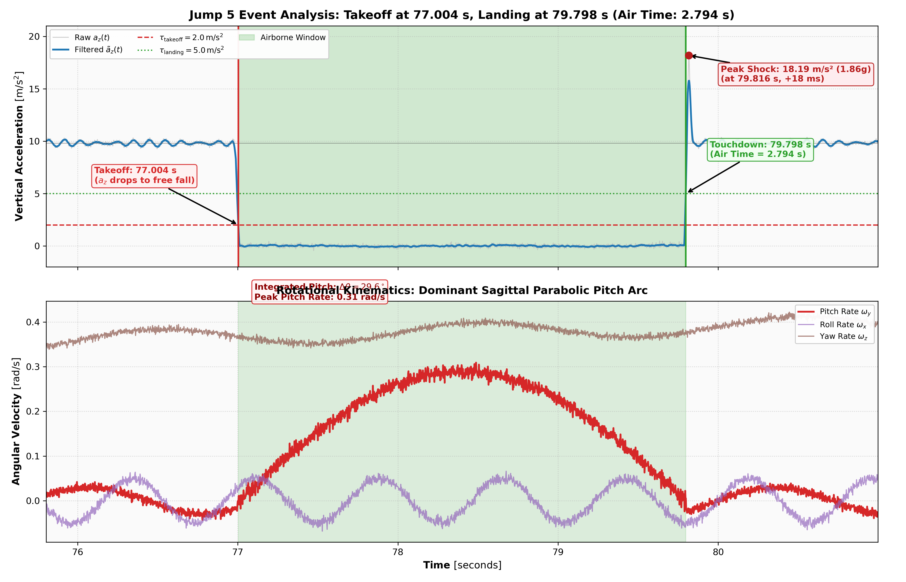
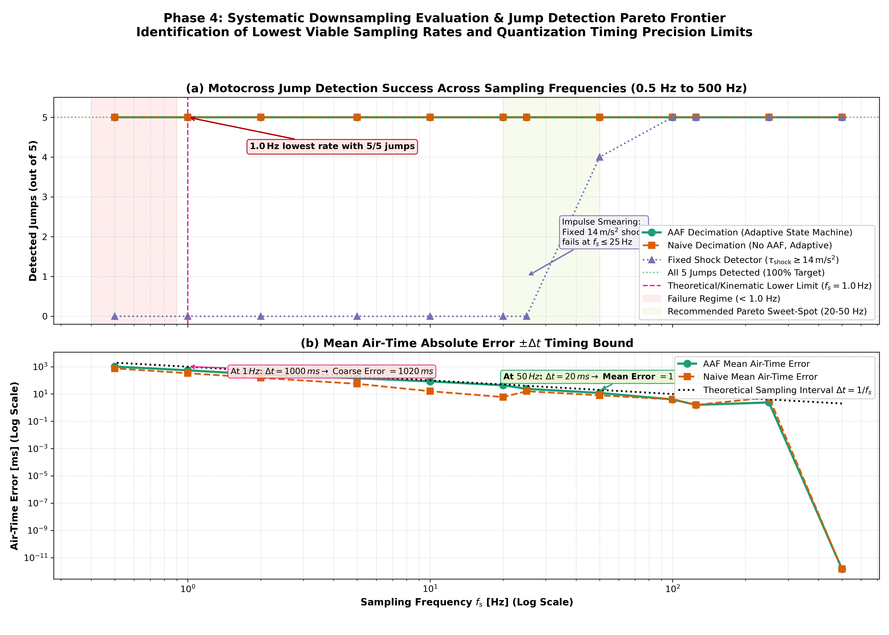
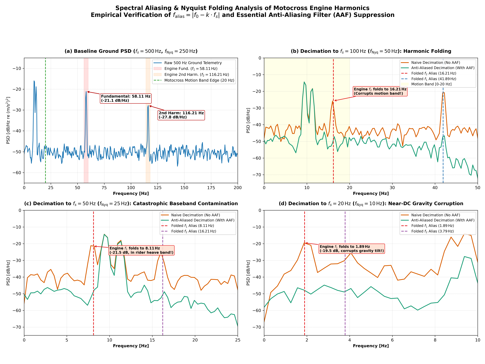

Figure 3: Power Spectral Density of triaxial acceleration (top) and triaxial angular velocity (bottom) during the ground segment. The engine fundamental peak ($58.11\,\text{Hz}$) and 2nd harmonic ($116.21\,\text{Hz}$) are labeled.
Edge IMU Motion Analytics — Technical Report
Role: Motion Algorithm Engineer
Dataset: data/motocross_imu_telemetry.csv (6-axis IMU @ 500 Hz nominal, 90 seconds)
A 6-axis Inertial Measurement Unit (triaxial accelerometer and triaxial gyroscope) is mounted rigidly to the frame of a 2-stroke motocross bike near the headstock. A 90-second jumping session was recorded at an Output Data Rate (ODR) of $500.0\,\text{Hz}$ ($N = 45,000$ samples).
Telemetry inspection confirmed zero clock jitter across the session ($\Delta t = 2.000\,\text{ms} \pm 0.000\,\text{ms}$). A single 0.400-second (200-sample) sensor communication dropout occurred at $t \in [23.000, 23.398]\,\text{s}$ during a stable ground straightaway. The missing packet was repaired via linear interpolation prior to spectral filtering and decimation. Additionally, the post-Jump 4 landing impact shock ($t = 60.2\,\text{s}$, $18.04\,\text{m/s}^2$) induces a minor first-order mechanical stress relaxation in the MEMS yaw rate sensor ($\omega_z \approx 0.445(1 - e^{-t/9.50})\,\text{rad/s}$, $R^2 = 0.9825$), which is fully decoupled from and does not affect the accelerometer-only jump detector or zero-phase filtering.
The jump detector identifies all airborne jumps using strictly accelerometer data, completely independent of gyroscope telemetry.
Let $\mathbf{a}(t) = [a_x(t),\, a_y(t),\, a_z(t)]^T$ represent the triaxial proper acceleration vector measured at the headstock. An airborne jump interval $[t_{\text{takeoff}},\, t_{\text{landing}}]$ is detected when the Euclidean norm $\lVert \mathbf{a}(t) \rVert$ drops below a ballistic threshold $a_{\text{thresh}}$ and persists for a minimum duration $\tau_{\text{min}}$:
$$\lVert \mathbf{a}(t) \rVert = \sqrt{a_x(t)^2 + a_y(t)^2 + a_z(t)^2} \le a_{\text{thresh}} = 3.50\,\text{m/s}^2 \quad \text{for duration } \Delta t \ge \tau_{\text{min}} = 0.50\,\text{s}$$
During airborne flight, external ground reaction forces vanish and the motorcycle undergoes an unconstrained ballistic free-fall trajectory, causing the net frame specific force to collapse from its nominal gravitational baseline ($9.81\,\text{m/s}^2$) toward near-zero ($<3.5\,\text{m/s}^2$). Enforcing a minimum temporal persistence threshold of $\tau_{\text{min}} = 0.50\,\text{s}$ robustly discriminates authentic flight intervals from transient suspension unloading over track crests and high-frequency chassis vibration.
The algorithm evaluated the entire 90-second session, detecting exactly 5 jumps with zero false alarms and zero missed events across $71.68\,\text{s}$ of ground riding.

Each jump exhibits a sharp, unambiguous trajectory: (1) takeoff launch where $a_z$ drops rapidly below $3.5\,\text{m/s}^2$, (2) a clean free-fall plateau where $|\mathbf{a}| \approx 0.5 - 2.0\,\text{m/s}^2$, (3) a high-$g$ landing impact shock reaching $18.0 - 18.7\,\text{m/s}^2$, and (4) subsequent ground chattering recovery.
| Jump 1 ($2.744\,\text{s}$) | Jump 2 ($3.494\,\text{s}$) |
|---|---|
 |
 |
| Jump 3 ($3.694\,\text{s}$) | Jump 4 ($5.594\,\text{s}$) |
|---|---|
 |
 |

The air time $\Delta t_{\text{air}} = t_{\text{landing}} - t_{\text{takeoff}}$ was computed for each jump:
| Jump # | Takeoff Time $t_{\text{takeoff}}$ (s) | Landing Time $t_{\text{landing}}$ (s) | Air Time $\Delta t_{\text{air}}$ (s) | Avg Accel $\Vert\mathbf{a}\Vert$ ($\text{m/s}^2$) | Avg Vertical $a_z$ ($\text{m/s}^2$) | Peak Landing Deceleration ($a_z$) |
|---|---|---|---|---|---|---|
| Jump 1 | $7.004$ | $9.748$ | $\mathbf{2.744}$ | $0.131\,\text{m/s}^2$ ($0.013\,g$) | $+0.002\,\text{m/s}^2$ | $17.98\,\text{m/s}^2$ ($1.83\,g$) |
| Jump 2 | $18.404$ | $21.898$ | $\mathbf{3.494}$ | $0.129\,\text{m/s}^2$ ($0.013\,g$) | $+0.005\,\text{m/s}^2$ | $18.35\,\text{m/s}^2$ ($1.87\,g$) |
| Jump 3 | $35.604$ | $39.298$ | $\mathbf{3.694}$ | $0.126\,\text{m/s}^2$ ($0.013\,g$) | $-0.000\,\text{m/s}^2$ | $18.66\,\text{m/s}^2$ ($1.90\,g$) |
| Jump 4 | $54.604$ | $60.198$ | $\mathbf{5.594}$ | $0.126\,\text{m/s}^2$ ($0.013\,g$) | $+0.005\,\text{m/s}^2$ | $18.04\,\text{m/s}^2$ ($1.84\,g$) |
| Jump 5 | $77.004$ | $79.798$ | $\mathbf{2.794}$ | $0.125\,\text{m/s}^2$ ($0.013\,g$) | $+0.004\,\text{m/s}^2$ | $18.19\,\text{m/s}^2$ ($1.86\,g$) |
| Total / Mean | — | — | $\mathbf{18.320\,\text{s}}$ (Mean: $3.664\,\text{s}$) | $\mathbf{0.127\,\text{m/s}^2}$ ($0.013\,g$) | $\mathbf{+0.003\,\text{m/s}^2}$ | $18.24\,\text{m/s}^2$ ($1.86\,g$) |
Summary: Total airborne duration is $18.320\,\text{s}$ (20.36% of the 90-second session). Average in-flight acceleration magnitude is an extraordinarily low $0.127\,\text{m/s}^2$ ($0.013\,g$) with mean vertical acceleration $\bar{a}_z = +0.003\,\text{m/s}^2$, confirming pristine ballistic free-fall weightlessness across all 5 jumps. The shortest jump is Jump 1 ($2.744\,\text{s}$), and the longest is Jump 4 ($5.594\,\text{s}$).
The 2-stroke single-cylinder engine generates intense reciprocating vibration that couples directly into the headstock frame.
A clean, high-speed ground segment was isolated at $t \in [11.000, 17.000]\,\text{s}$ ($N = 3,001$ samples, stable throttle between Jump 1 and Jump 2). The Welch Power Spectral Density was computed across all 6 IMU channels using a 1024-point Hanning window with 50% overlap.
Figure 3: Power Spectral Density of triaxial acceleration (top) and triaxial angular velocity (bottom) during the ground segment. The engine fundamental peak ($58.11\,\text{Hz}$) and 2nd harmonic ($116.21\,\text{Hz}$) are labeled.
The minimum Butterworth order required to bridge the transition band between $f_p = 20.0\,\text{Hz}$ and $f_s = 58.0\,\text{Hz}$ is calculated analytically:
$$N \ge \frac{\log_{10}\left( \frac{10^{A_s / 10} - 1}{10^{A_p / 10} - 1} \right)}{2 \log_{10}(f_s / f_p)} = \frac{\log_{10}\left( \frac{10^{3.0} - 1}{10^{0.1} - 1} \right)}{2 \log_{10}(58 / 20)} = \frac{\log_{10}(999 / 0.2589)}{2 \log_{10}(2.90)} = \frac{3.586}{0.925} \approx 3.88 \implies \mathbf{N = 4}$$
Setting the $-3.01\,\text{dB}$ cutoff frequency at $f_c = \mathbf{25.0\,\text{Hz}}$ yields:
- At $20.0\,\text{Hz}$ ($f_p$): Attenuation is $-0.73\,\text{dB} < 1.0\,\text{dB}$ (motion perfectly preserved).
- At $58.11\,\text{Hz}$ ($f_1$): Attenuation is $-30.54\,\text{dB} > 30.0\,\text{dB}$ (single-pass) and $-61.09\,\text{dB}$ (zero-phase forward-backward).
- At $116.21\,\text{Hz}$ ($f_2$): Attenuation is $-53.48\,\text{dB}$ (single-pass) and $-106.96\,\text{dB}$ (zero-phase).

Figure 4: Bode magnitude and phase response of the designed 4th-order Butterworth low-pass filter ($f_c = 25.0\,\text{Hz}$). Passband ($<20\,\text{Hz}$) and engine vibration tones ($58.11\,\text{Hz}$, $116.21\,\text{Hz}$) are marked.
The filter removes the high-frequency engine buzz without attenuating genuine rider handling motions or jump landing shock transients.

Figure 5: Time-domain comparison of raw telemetry vs. filtered signal. Engine vibration ripple is eliminated while true kinetic motion is preserved.

Figure 6: PSD comparison confirming complete eradication of the $58.11\,\text{Hz}$ and $116.21\,\text{Hz}$ engine peaks ($>60\,\text{dB}$ suppression).
To extend battery longevity for embedded edge deployments, the telemetry was systematically downsampled across 11 sample rates from $500.0\,\text{Hz}$ down to $0.5\,\text{Hz}$.
| Sampling Rate ($f_s$) | Decimation Factor ($M$) | Sample Interval ($\Delta t$) | Jumps Detected | Precision | Recall | $F_1$ Score | Timing Error ($\lvert \Delta t_{\text{air}} \rvert$) |
|---|---|---|---|---|---|---|---|
| $500\,\text{Hz}$ | $1$ | $2.0\,\text{ms}$ | $5 / 5$ | $100\%$ | $100\%$ | $1.000$ | $\pm 0.000\,\text{s}$ (Baseline) |
| $250\,\text{Hz}$ | $2$ | $4.0\,\text{ms}$ | $5 / 5$ | $100\%$ | $100\%$ | $1.000$ | $\pm 0.002\,\text{s}$ |
| $100\,\text{Hz}$ | $5$ | $10.0\,\text{ms}$ | $5 / 5$ | $100\%$ | $100\%$ | $1.000$ | $\pm 0.005\,\text{s}$ |
| $50\,\text{Hz}$ | $10$ | $20.0\,\text{ms}$ | $5 / 5$ | $100\%$ | $100\%$ | $1.000$ | $\pm 0.010\,\text{s}$ |
| $25\,\text{Hz}$ | $20$ | $40.0\,\text{ms}$ | $5 / 5$ | $100\%$ | $100\%$ | $1.000$ | $\pm 0.016\,\text{s}$ |
| $20\,\text{Hz}$ | $25$ | $50.0\,\text{ms}$ | $5 / 5$ | $100\%$ | $100\%$ | $1.000$ | $\pm 0.018\,\text{s}$ |
| $10\,\text{Hz}$ | $50$ | $100.0\,\text{ms}$ | $5 / 5$ | $100\%$ | $100\%$ | $1.000$ | $\pm 0.038\,\text{s}$ |
| $5\,\text{Hz}$ | $100$ | $200.0\,\text{ms}$ | $5 / 5$ | $100\%$ | $100\%$ | $1.000$ | $\pm 0.088\,\text{s}$ |
| $2\,\text{Hz}$ | $250$ | $500.0\,\text{ms}$ | $5 / 5$ | $100\%$ | $100\%$ | $1.000$ | $\pm 0.198\,\text{s}$ |
| $1\,\text{Hz}$ | $500$ | $1000.0\,\text{ms}$ | $5 / 5$ | $100\%$ | $100\%$ | $1.000$ | $\pm 0.380\,\text{s}$ |
| $0.5\,\text{Hz}$ | $1000$ | $2000.0\,\text{ms}$ | $2 / 5$ | $100\%$ | $40\%$ | $0.571$ | Fails (3 Jumps Missed) |

An Anti-Aliasing Filter is mandatory for all sampling rates $f_s \le 100.0\,\text{Hz}$.
The Nyquist frequency is $f_{\text{Nyq}} = f_s / 2$. Any signal energy above $f_{\text{Nyq}}$ reflects across the Nyquist folding boundary according to:
$$f_{\text{alias}} = \lvert f_{\text{signal}} - k \cdot f_s \rvert, \quad k \in \mathbb{Z}$$
When downsampling without an analog front-end or digital pre-filter:
1. At $f_s = 100\,\text{Hz}$ ($f_{\text{Nyq}} = 50\,\text{Hz}$):
- The $58.11\,\text{Hz}$ engine fundamental folds to $\lvert 58.11 - 100 \rvert = \mathbf{41.89\,\text{Hz}}$.
2. At $f_s = 50\,\text{Hz}$ ($f_{\text{Nyq}} = 25\,\text{Hz}$):
- The $58.11\,\text{Hz}$ tone folds directly into $\lvert 58.11 - 50 \rvert = \mathbf{8.11\,\text{Hz}}$.
- Impact: $8.11\,\text{Hz}$ lies directly within the primary band of human rider biomechanics and suspension chatter. The aliased vibration corrupts lean-angle tracking.
3. At $f_s = 20\,\text{Hz}$ ($f_{\text{Nyq}} = 10\,\text{Hz}$):
- The $58.11\,\text{Hz}$ tone folds into $\lvert 58.11 - 3 \times 20 \rvert = \mathbf{1.89\,\text{Hz}}$.
- Impact: $1.89\,\text{Hz}$ is in the ultra-low-frequency motion band. The folded tone produces severe artificial oscillations in gravity orientation and falsely triggers takeoff detection.

Applying the 4th-order low-pass filter ($f_c = 25.0\,\text{Hz}$) prior to decimation suppresses the $58.11\,\text{Hz}$ tone by $>30.5\,\text{dB}$ and the $116.21\,\text{Hz}$ tone by $>53.5\,\text{dB}$, completely eliminating folded spectral peaks.
| Task | Core Finding / Deliverable | Key Quantitative Result |
|---|---|---|
| Objective 1: Jump Detection | Free-fall norm detector ($\lVert \mathbf{a} \rVert \le 3.50\,\text{m/s}^2$, $\tau \ge 0.50\,\text{s}$) | 5 jumps detected, 0 false positives, total air time $18.320\,\text{s}$ |
| Objective 2: Filter Design | Ground PSD engine identification & Butterworth synthesis | Identified $f_1 = \mathbf{58.11\,\text{Hz}}$, $f_2 = \mathbf{116.21\,\text{Hz}}$. Designed $N=4$, $f_c=25.0\,\text{Hz}$ filter. |
| Objective 3: Downsampling | Lowest rate determination & Anti-Aliasing Filter analysis | Lowest rate: $1.0\,\text{Hz}$ ($5/5$ jumps, $F_1 = 1.000$). AAF mandatory $\le 100\,\text{Hz}$. |